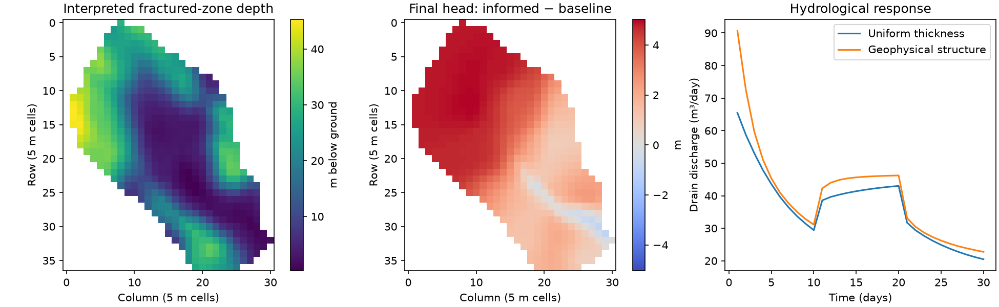

Note
Go to the end to download the full example code.
Ex. Geophysical structure → MODFLOW → hydrological response#
Run a small MODFLOW 6 comparison using the topography and interpreted regolith / fractured-bedrock depths from Hang Chen’s Geophysics_informed_models repository. The bundled data are 13 KB and require no runtime data download. This example compares uniform layer thicknesses with spatially varying interpreted interfaces. Hydraulic properties and forcing are illustrative, not the paper’s calibration. It does not perform seismic inversion or infer conductivity from velocity.
Open the companion notebook and run its cells in order. Install flopy,
numpy, matplotlib and PyHydroGeophysX first. Set the executable path
in the settings cell, or enable its optional download. Set write_only=True
to inspect inputs without running a solver. No ParFlow, GPU, pyGIMLi or GIS
installation is needed.
Source: geohang/Geophysics_informed_models Revision: a23fff3c00c0033f479064cf3651e23b1d5bea07 (Apache-2.0). The original S4 notebook constructs top - regolith_depth and top - fractured_depth interfaces at 5 m spacing. Its integrated UZF/SFR/MVR catchment model is replaced here with prescribed recharge, drains and a fixed-head outlet for a short test. See data/modflow_informed/provenance.json for exact source files and hashes.
1. Imports and example directory#
from pathlib import Path
import json
import re
import shutil
import tempfile
import numpy as np
import flopy
import matplotlib.pyplot as plt
from PyHydroGeophysX.model_input import write_modflow6_inputs
current_dir = Path(__file__).resolve().parent if "__file__" in globals() else Path.cwd()
if not (current_dir / "data/modflow_informed/structure.npz").is_file():
current_dir = current_dir / "examples"
data_path = current_dir / "data/modflow_informed/structure.npz"
if not data_path.is_file():
raise FileNotFoundError("Open the notebook from examples/ or the repository root.")
2. Settings#
mf6 = None # Set to your mf6 executable path, or leave None to search PATH.
download = False # Set True to download the official executable with FloPy.
write_only = False # Set True to prepare inputs without running MODFLOW.
output = None # None creates a unique folder; otherwise supply a new directory.
3. Convert interpreted depths to hydrological interfaces#
with np.load(data_path) as data:
top = data['top'].copy()
active = data['active'].astype(bool)
reg = data['regolith_depth'].copy()
fractured = data['fractured_depth'].copy()
if not all(np.isfinite(a[active]).all() for a in (top, reg, fractured)):
raise ValueError('Active source cells must have finite structure data.')
# Same thin-layer conditioning as S4; no inferred conductivity conversion.
reg = np.where(active, np.where(reg <= .1, .15, reg), 1.)
fractured = np.where(active, np.where(fractured <= reg+.1, reg+.15, fractured), 10.)
top[~active] = np.mean(top[active])
# Same base in both cases so only internal layer geometry changes.
base = top - np.maximum(fractured+30., np.mean(fractured[active])+1.)
informed = np.stack([top-reg, top-fractured, base])
baseline = np.stack([top-np.mean(reg[active]), top-np.mean(fractured[active]), base])
print(f"Grid: {top.shape}; active cells per layer: {active.sum()}")
4. Prepare the output folder and executable#
executable = str(Path(mf6).expanduser().resolve()) if mf6 else shutil.which('mf6')
if not write_only and executable is None and not download:
raise FileNotFoundError("Set mf6 or download=True in cell 2; write_only=True needs no solver.")
if output is None:
results = current_dir / 'results'
results.mkdir(exist_ok=True)
output = Path(tempfile.mkdtemp(prefix='modflow-feedback-', dir=results)) / 'run'
output = Path(output).resolve()
output.mkdir(parents=True, exist_ok=False)
if not write_only and executable is None and download:
from flopy.utils import get_modflow
binary = output / 'bin'
binary.mkdir()
get_modflow(str(binary), subset='mf6', quiet=True)
executable = str(next(binary.glob('mf6*')))
print(f"Results: {output}")
5. Build the uniform-thickness baseline#
sim = flopy.mf6.MFSimulation(sim_name='structure_demo', sim_ws=str(output / 'baseline'), exe_name=executable or 'mf6')
flopy.mf6.ModflowTdis(sim, time_units='DAYS', nper=3,
perioddata=[(10.,10,1.)]*3)
flopy.mf6.ModflowIms(sim, complexity='MODERATE', linear_acceleration='BICGSTAB',
outer_dvclose=1e-7, inner_dvclose=1e-8, rcloserecord=1e-6)
model = flopy.mf6.ModflowGwf(sim, modelname='catchment', save_flows=True)
shape = baseline.shape
flopy.mf6.ModflowGwfdis(model, length_units='METERS', nlay=3,
nrow=shape[1], ncol=shape[2], delr=5., delc=5., top=top,
botm=baseline, idomain=np.broadcast_to(active,shape).astype(int))
flopy.mf6.ModflowGwfnpf(model, icelltype=0, k=[1.,.1,.001], k33=[.1,.01,.0001], save_flows=True)
flopy.mf6.ModflowGwfic(model, strt=np.broadcast_to(top+.1,shape))
# Confined storage is intentional: this small linear comparison does not model UZF.
flopy.mf6.ModflowGwfsto(model, iconvert=0, ss=1e-4, sy=.1, transient={0:True})
row, col = np.unravel_index(np.argmin(np.where(active,top,np.inf)),top.shape)
flopy.mf6.ModflowGwfchd(model, stress_period_data=[((0,int(row),int(col)),float(top[row,col]))], save_flows=True)
drains = [((0,int(r),int(c)),float(top[r,c]),1.) for r,c in np.argwhere(active)
if (r,c)!=(row,col)]
flopy.mf6.ModflowGwfdrn(model, stress_period_data=drains, save_flows=True)
flopy.mf6.ModflowGwfrcha(model, recharge={i:np.where(active,rate,0.)
for i,rate in enumerate([.001,.003,.001])}, save_flows=True)
flopy.mf6.ModflowGwfoc(model, head_filerecord='catchment.hds', budget_filerecord='catchment.cbc',
saverecord=[('HEAD','ALL'),('BUDGET','ALL')], printrecord=[('BUDGET','ALL')])
sim.write_simulation(silent=True)
6. Write the geophysics-informed geometry#
The base, hydraulic properties and forcing stay the same in both models.
write_modflow6_inputs(sim, output / 'informed', {'bottom_elevation': informed})
print('Both model input decks are ready.')
7. Run each model and check its water budget#
This helper applies identical solver and output checks to both cases.
def run_case(folder, executable, active):
import flopy
sim = flopy.mf6.MFSimulation.load(sim_ws=str(folder),exe_name=executable,verbosity_level=0)
ok, report = sim.run_simulation(silent=True,report=True)
(folder/'solver.log').write_text('\n'.join(report),encoding='utf-8')
if not ok:
raise RuntimeError(f'MODFLOW failed; inspect {folder / "solver.log"}')
model = sim.get_model()
heads = model.output.head().get_data()
if not np.isfinite(heads[:,active]).all() or np.any(np.abs(heads[:,active])>1e20):
raise RuntimeError('Invalid active-cell heads.')
listing = (folder/'catchment.lst').read_text(errors='replace')
discrepancy = [abs(float(x)) for x in re.findall(r'PERCENT DISCREPANCY\s*=\s*([-+\d.Ee]+)',listing)]
if not discrepancy or max(discrepancy) > .1:
raise RuntimeError('Missing or excessive water-budget discrepancy.')
budget = model.output.budget()
times = budget.get_times()
discharge = [-float(budget.get_data(text='DRN',totim=t)[0]['q'].sum()) for t in times]
return heads, np.asarray(times), np.asarray(discharge), max(discrepancy)
8. Compare heads and drain discharge#
if not write_only:
base_head, times, base_q, base_error = run_case(output/'baseline',executable,active)
informed_head, informed_times, informed_q, informed_error = run_case(output/'informed',executable,active)
np.testing.assert_array_equal(times,informed_times)
summary = {'status':'both_simulations_completed', 'output':str(output),
'active_cells':int(active.sum()*3),'steps':len(times),
'max_head_change_m':float(np.max(np.abs(informed_head[:,active]-base_head[:,active]))),
'max_budget_discrepancy_percent':max(base_error,informed_error),
'interpretation':'Sensitivity to interpreted structure, not evidence of improved prediction.'}
(output/'summary.json').write_text(json.dumps(summary,indent=2),encoding='utf-8')
np.savez_compressed(output/'comparison.npz',baseline_head=base_head,informed_head=informed_head,
time_days=times,baseline_drain_m3_day=base_q,informed_drain_m3_day=informed_q,active=active)
print(json.dumps(summary, indent=2))
else:
summary = {"output": str(output), "status": "inputs_written_not_run"}
print(summary)
9. Plot the hydrological response#
Read the differences as sensitivity to structure, not evidence of improved prediction.
if not write_only:
fig, axes = plt.subplots(1,3,figsize=(13,4),layout='constrained')
artist = axes[0].imshow(np.where(active,top-informed[1],np.nan),cmap='viridis')
axes[0].set_title('Interpreted fractured-zone depth')
fig.colorbar(artist,ax=axes[0],label='m below ground')
difference = np.where(active,informed_head[0]-base_head[0],np.nan)
limit = max(float(np.nanmax(np.abs(difference))),1e-12)
artist = axes[1].imshow(difference,cmap='coolwarm',vmin=-limit,vmax=limit)
axes[1].set_title('Final head: informed − baseline')
fig.colorbar(artist,ax=axes[1],label='m')
for ax in axes[:2]:
ax.set(xlabel='Column (5 m cells)',ylabel='Row (5 m cells)')
axes[2].plot(times,base_q,label='Uniform thickness')
axes[2].plot(times,informed_q,label='Geophysical structure')
axes[2].set(xlabel='Time (days)',ylabel='Drain discharge (m³/day)',title='Hydrological response')
axes[2].legend()
fig.savefig(output/'comparison.png',dpi=150)
plt.show()
The interpreted fractured-zone depth (left) sets where the two models differ;
the head difference (centre) and the drain hydrographs (right) show how that
structure propagates into the simulated response. The figure is produced with
write_only = False.
{kind=link}
